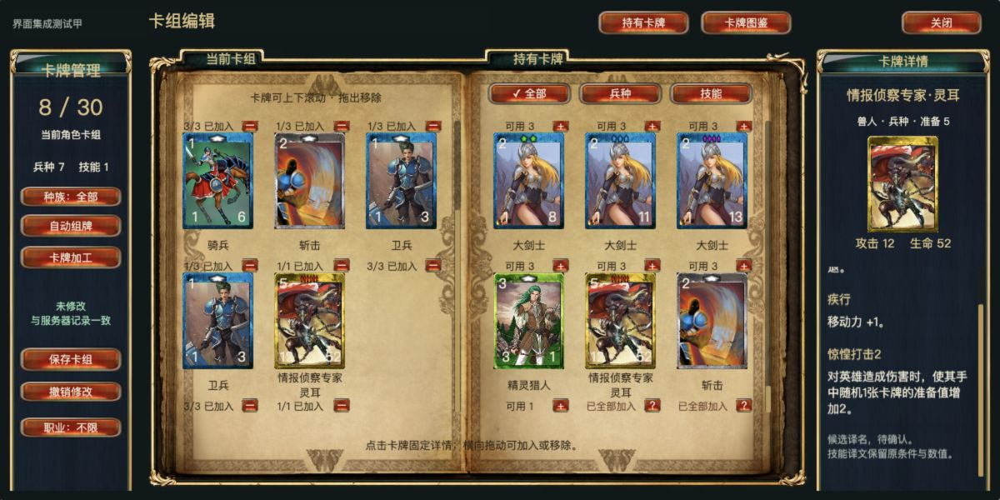
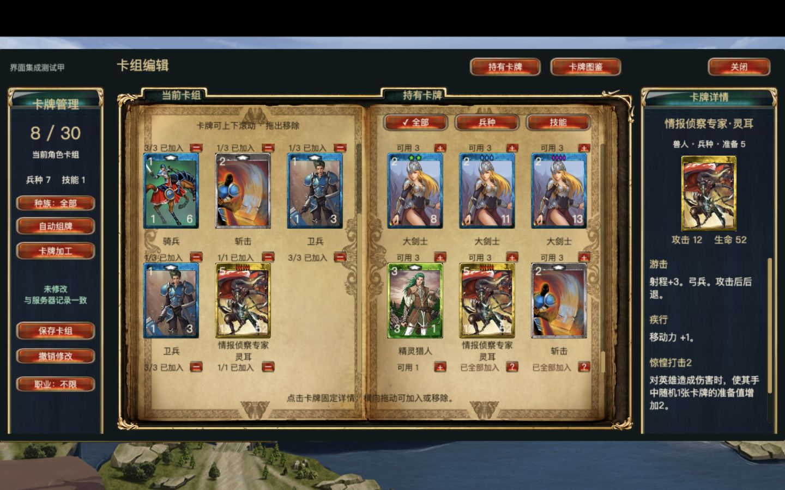
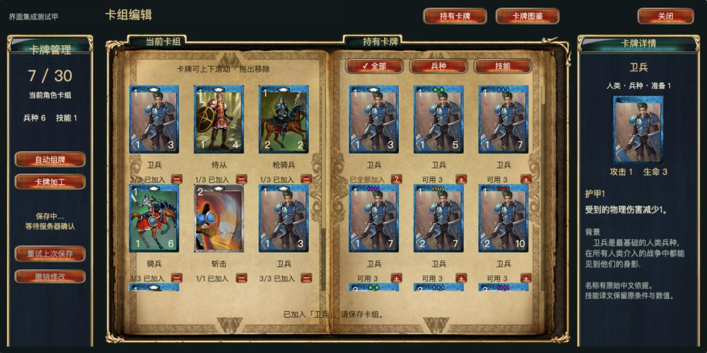
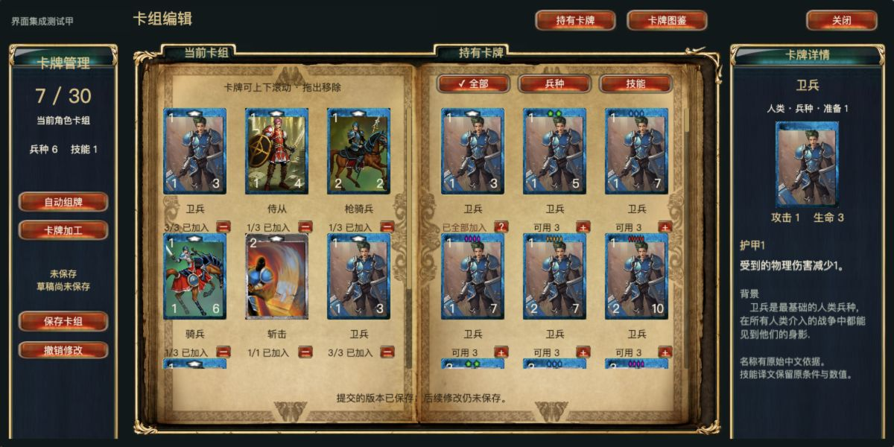
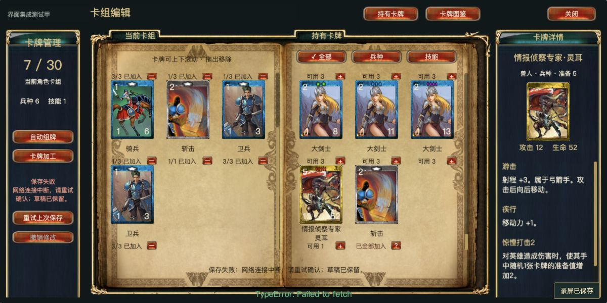
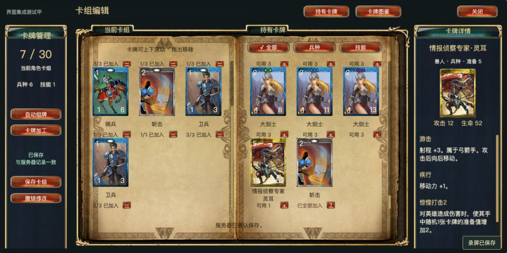
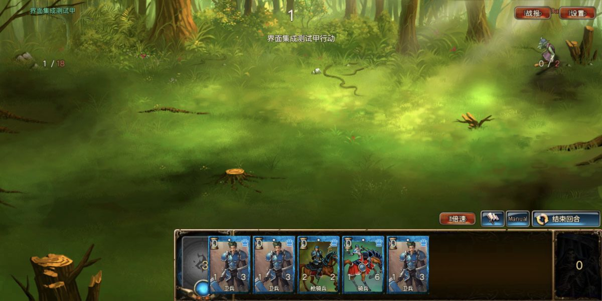
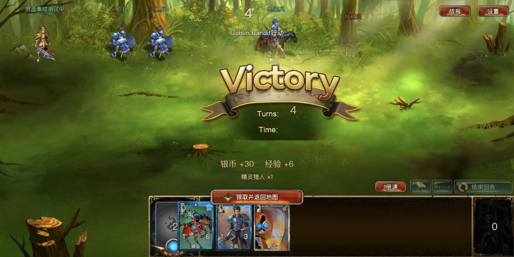
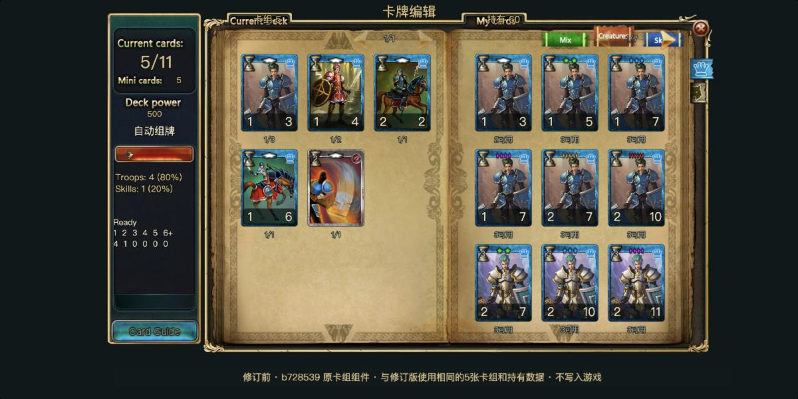
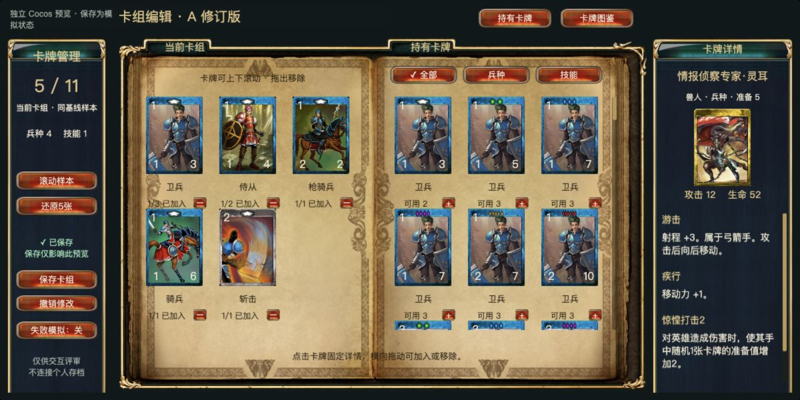

A 修订版已接入正式游戏
中文展示、卡组与卡库独立竖向滚动、固定可滚动详情、跨栏拖放、真实保存。当前为本机集成验收结果，用户体验尚待确认；没有推送或公网部署。
进入正式游戏（隔离测试存档） 交付说明 逐项验收记录 中文覆盖与缺失
7,032 条当前有效卡牌已有展示名，多数是候选译文。10 条效果、11 条技能说明因原文缺失待核对，不称全量官方中文恢复。旧预览的模拟保存不进入正式入口。
最终正式构建

1200×600，真实服务保存的8张卡组。中文长名、多段说明按原字号换行，详情可单独滚动。
1440×900，1200×600设计内容等比1.2，内容高720、纵向偏移90；14设计字号约16.8 CSS像素。滚动 → 详情 → 拖放 → 真实保存 → 重新进入
53.05秒，原生Canvas连续录制，无音频。录制来自正式接入过程，随后补入筛选、取消防护、角色会话与缓存兼容，最终外观以以上截图和构建哈希为准。数据库是隔离夹具，保存请求与事务真实。
失败和并发编辑

真实提交6张，响应延迟时改成7张。
6张确认后，后续第7张仍未保存。
停止隔离服务后真实网络失败，草稿和滚动位置保留。
同SQLite重启，重试成功。请求标识与原提交内容保持。真实 PVE 与奖励返回

8张已保存卡组进入真实PVE，手牌仍横向。
第4回合胜利，卡牌奖励复用同一中文映射；旧结算材质仍有英文。历史同数据对照

b728539 原卡组组件，同一5张/11容量夹具。
A独立预览历史对照，同5张夹具。仅用于视觉对照，不作为真实保存证据。本页截图均为本项目Cocos运行结果；不是原版官方客户端截图。原材质、卡图与图框保留，滚动布局为本轮授权优化。未逐项验收全部章节、联机或真实触屏设备。